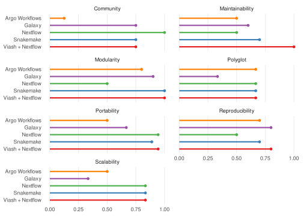
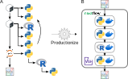
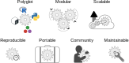

5 Workflows
Single-cell analysis has revolutionized our understanding of cellular heterogeneity and complex biological processes. However, this cutting-edge field often demands the use of multiple programming languages and frameworks, each with its strengths and specialized tools (Heumos et al. 2023). This polyglot approach, while powerful, introduces significant technical challenges in terms of interoperability, usability, and reproducibility.
In the previous chapters, we’ve explored strategies for supporting data operability across programming language. Now, we turn our attention to how to effectively integrate these tools and languages into a cohesive and scalable analysis workflow.
Productionization is the process of transforming research-oriented analysis pipelines into robust, scalable, and maintainable workflows that can be reliably executed in a production environment (Figure 5.1). This transition is essential for ensuring the reproducibility of results, facilitating collaboration among researchers, and enabling the efficient processing of large and complex single-cell datasets.

In this chapter, we’ll delve into the key components and considerations involved in building production-ready multi-language single-cell analysis workflows. We’ll explore essential elements such as data storage, compute environments, containerization, workflow management systems, and best practices for reproducibility. By the end of this chapter, you’ll have an understanding of the tools and strategies needed to create robust and scalable workflows for single-cell analysis (or any other data-intensive domain).
5.1 Qualities of a Production-Ready Workflow
Building production-ready workflows for single-cell analysis involves integrating a variety of tools, technologies, and best practices. In order to meet the demands of large-scale data processing, reproducibility, and collaboration, a production-ready workflow should exhibit the following essential qualities (Figure 5.2):

- Polyglot: Seamlessly integrate tools and libraries from different programming languages, allowing you to leverage the strengths of each language for specific tasks. This facilitates the use of specialized tools and optimizes the analysis pipeline for performance and efficiency.
- Modular: A well-structured workflow should be composed of modular and reusable components, promoting code maintainability and facilitating collaboration. Each module should have a clear purpose and well-defined inputs and outputs, enabling easy integration and replacement of individual steps within the pipeline.
- Scalable: Single-cell datasets can be massive, and a production-ready workflow should be able to handle large volumes of data efficiently. This involves utilizing scalable compute environments, optimizing data storage and retrieval, and implementing parallelization strategies to accelerate analysis.
- Reproducible: Ensuring reproducibility is crucial for scientific rigor and validation. A production-ready workflow should capture all the necessary information, including code, data, parameters, and software environments, to enable others to replicate the analysis and obtain consistent results.
- Portable: The workflow should be designed to run seamlessly across different computing platforms and environments, promoting accessibility and collaboration. Containerization technologies like Docker can help achieve portability by encapsulating the workflow and its dependencies into a self-contained unit.
- Maintainable: A production-ready workflow should be well-documented, organized, and easy to understand, facilitating updates, modifications, and troubleshooting. Clear documentation of code, data, and parameters ensures that the workflow remains accessible and usable over time.
- Community: Leveraging community resources, tools, and best practices can accelerate the development of production-ready workflows. Engaging with the scientific community, contributing to open-source projects, and adopting community-driven standards can enhance the quality and impact of your workflow.
5.2 Review of Workflow Frameworks
A lot of different workflow frameworks exist, and there are a lot of factors to consider when choosing the right one for your project. Wratten, Wilm, and Göke (2021) conducted a review of popular workflow managers for bioinformatics, evaluating them based on several key aspects, including ease of use, expressiveness, portability, scalability, and learning resources (Table 5.1). The accompanying GitHub repository is especially interesting, which contains proof-of-concept implementations of the same RNA-seq workflow in different workflow frameworks, allowing for a direct comparison of their expressiveness and ease of use.
| Tool | Class | Ease of use | Expressiveness | Portability | Scalability | Learning resources | Pipeline initiatives |
|---|---|---|---|---|---|---|---|
| Galaxy | Graphical | ●●● | ●○○ | ●●● | ●●● | ●●● | ●●○ |
| KNIME | Graphical | ●●● | ●○○ | ○○○ | ●●◐ | ●●● | ●●○ |
| Nextflow | DSL | ●●○ | ●●● | ●●● | ●●● | ●●● | ●●● |
| Snakemake | DSL | ●●○ | ●●● | ●●◐ | ●●● | ●●○ | ●●● |
| GenPipes | DSL | ●●○ | ●●● | ●●○ | ●●○ | ●●○ | ●●○ |
| bPipe | DSL | ●●○ | ●●● | ●●○ | ●●◐ | ●●○ | ●○○ |
| Pachyderm | DSL | ●●○ | ●●● | ●○○ | ●●○ | ●●● | ○○○ |
| SciPipe | Library | ●●○ | ●●● | ○○○ | ○○○ | ●●○ | ○○○ |
| Luigi | Library | ●●○ | ●●● | ●○○ | ●●◐ | ●●○ | ○○○ |
| Cromwell + WDL | Execution + workflow specification | ●○○ | ●●○ | ●●● | ●●◐ | ●●○ | ●●○ |
| cwltool + CWL | Execution + workflow specification | ●○○ | ●●○ | ●●◐ | ○○○ | ●●● | ●●○ |
| Toil + CWL/WDL/Python | Execution + workflow specification | ●○○ | ●●● | ●◐○ | ●●● | ●●○ | ●●○ |
However, the Supplementary Table shows that the comparison in Table 5.1 was rather limited, since the score of each category was only based on a single criterion. The criteria were defined as follows:
- Ease of Use: Graphical interface with execution environment (score of 3), programming interface with in-built execution environment (score of 2), separated development and execution environment (score of 1).
- Expressiveness: Based on an existing programming language (3) or a new language or restricted vocabulary (2), primary interaction with graphical user interface (1).
- Portability: Integration with three or more container and package manager platforms (3), two platforms are supported (2), one platform is supported (1).
- Scalability: Considers cloud support, scheduler and orchestration tool integration, and executor support. Please refer to Supplementary Table 1 - Sheet 2 (Scalability).
- Learning resources: Official tutorials, forums and events (3), tutorials and forums (2), tutorials or forums (1).
- Pipelines Initiatives: Community and curated (3), community or curated (2), not community or curated (1).
Only the “Scalability” score was determined by more than one criterion.
5.3 Quality Assessment of Workflow Frameworks
Given the abovementioned limitations, we decided to conduct our own quality assessment of workflow frameworks. This assessment is still largely in the works, but we’ve already collected some data on the quality of different workflow frameworks.
The data is based on a review of the documentation and community resources for each framework. We evaluated the frameworks based on the list of essential qualities mentioned in the previous section (Figure 5.2).